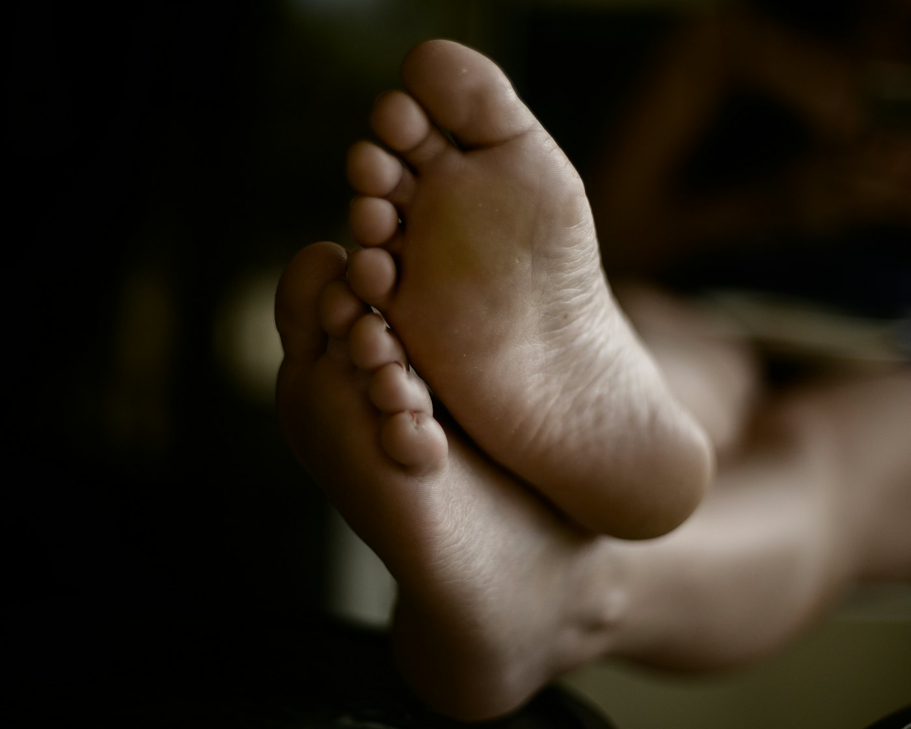
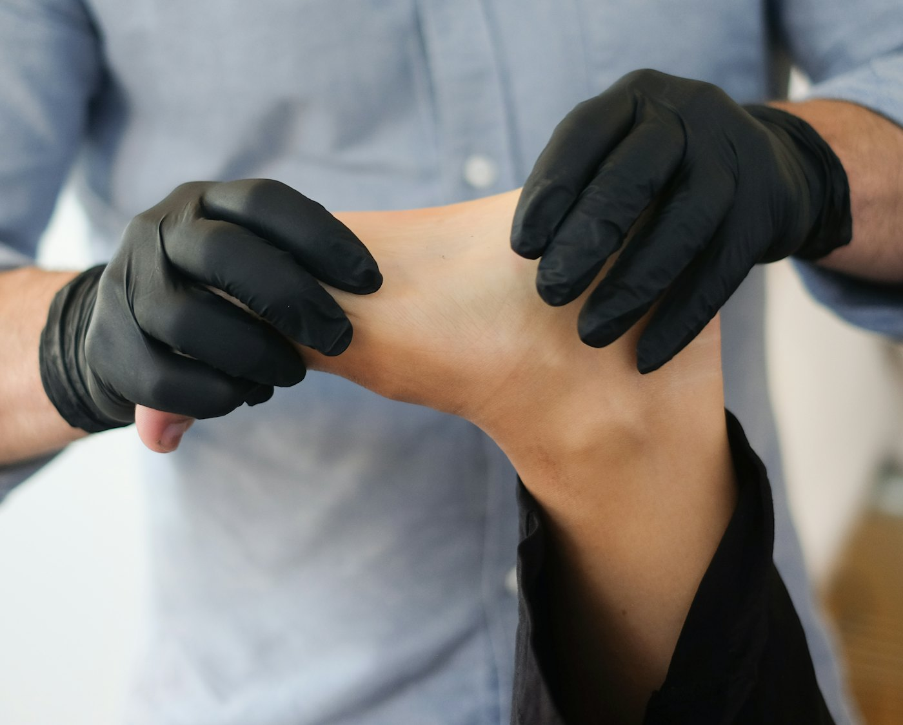
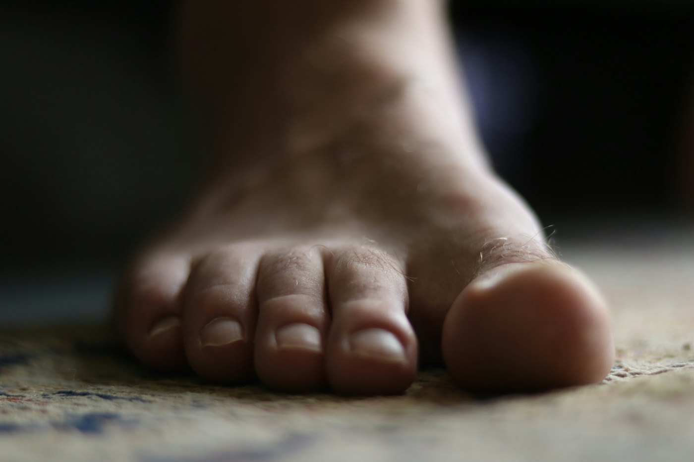
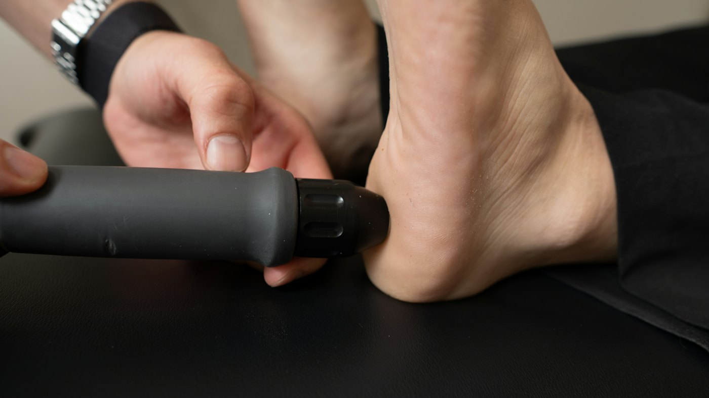
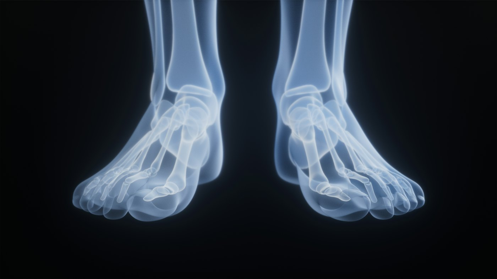
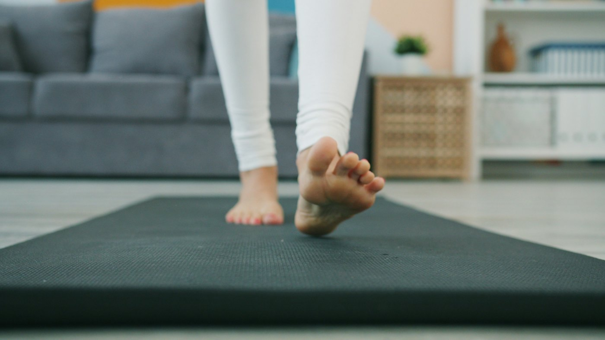
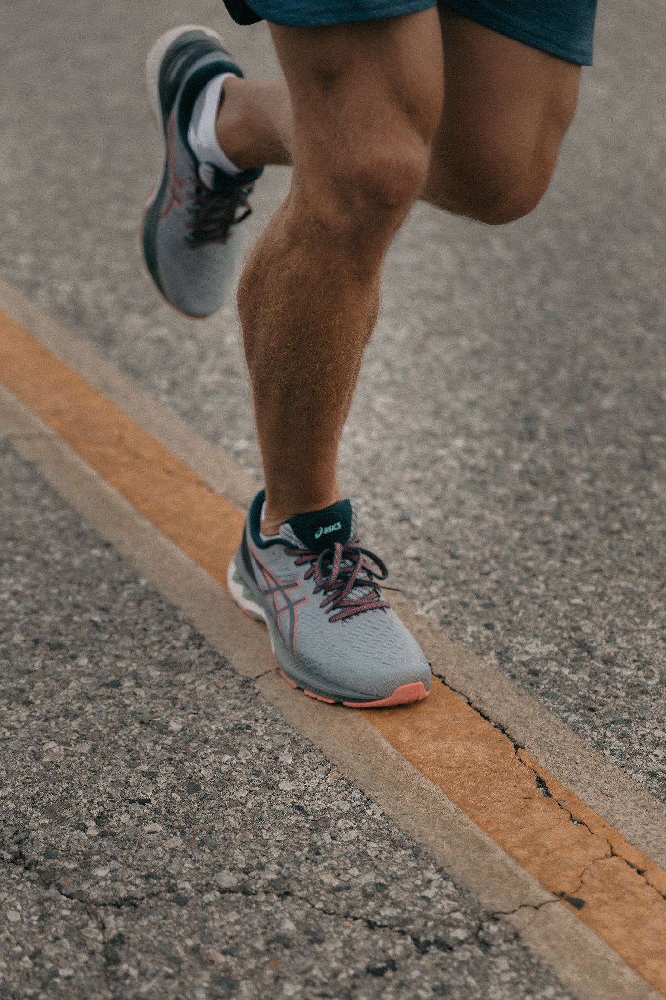

Podología general
Quiropodia
Eliminación de durezas, callos y helomas, y corte y fresado de uñas gruesas o difíciles de cortar.
Consulta de podología en la zona norte de Granada. Tratamos durezas, uñas encarnadas, dolor de talón y alteraciones de la pisada con un trato cercano y siempre con el mismo profesional.

En la consulta de Antonio Barrios en Granada nos dedicamos solo al pie. Desde una dureza que molesta al andar hasta un dolor de talón que no se va, buscamos la causa y te damos un tratamiento claro, con un trato cercano en cada visita.
Exploramos el pie, la pisada y el calzado para encontrar el origen del problema.
Resolvemos en consulta lo que se puede resolver y te explicamos el plan para el resto.
Te damos pautas de cuidado y calzado para que el problema no vuelva.
Elige un área para ver lo que tratamos en consulta.

Eliminación de durezas, callos y helomas, y corte y fresado de uñas gruesas o difíciles de cortar.

Tratamiento conservador o cirugía ungueal con anestesia local cuando la uña vuelve a clavarse una y otra vez.

Fascitis plantar y talalgias: tratamiento en consulta, vendajes, plantillas y ejercicios para casa.
Diagnóstico y tratamiento de la onicomicosis para recuperar uñas sanas.
Eliminación de verrugas plantares, que duelen al pisar y se contagian con facilidad.
Revisión periódica de sensibilidad y circulación, y cuidado preventivo para evitar lesiones.

Análisis en estática y en marcha para detectar pie plano, cavo o pronador y su efecto en rodillas y espalda.

Plantillas hechas a partir de tu estudio, para el calzado de diario, el trabajo o el deporte.

Prevención y tratamiento de lesiones en corredores y deportistas, y consejo sobre la zapatilla adecuada.
Dolor en la parte delantera del pie al caminar o al llevar tacón.
Valoración del arco plantar y tratamiento con plantillas y ejercicios.
Revisión de la pisada en niños para detectar a tiempo alteraciones del crecimiento.
Tres cosas que se repiten en las opiniones de quienes ya han pasado por la consulta.
Te atiende siempre la misma persona, que conoce tu historia y tus pies.
Sabrás qué tienes, por qué ocurre y cómo cuidar tus pies en casa.
Una consulta limpia y agradable, con material esterilizado en cada tratamiento.
Desde que llamas hasta que sales por la puerta, sabrás en todo momento qué te vamos a hacer.
Llama o escríbenos por WhatsApp y buscamos la hora que mejor te venga.
Teléfono o WhatsAppHablamos de lo que te ocurre y revisamos el pie, la pisada y tu calzado.
Primera visitaResolvemos en consulta lo que se puede tratar ese mismo día y te explicamos los siguientes pasos.
En la misma citaTe damos pautas para casa y fijamos una revisión si el tratamiento lo necesita.
SeguimientoSabrás lo que cuesta tu tratamiento antes de empezar.
El cuidado básico del pie, para revisar cada pocas semanas.
Para dolor al caminar, al correr o al estar mucho de pie.
Fabricadas a partir de tu estudio de la pisada.
Precios orientativos con IVA incluido. Uña encarnada, papilomas y otros tratamientos: consúltanos.
Un gran profesional, muy buen trato y nos ha dejado los pies estupendos.
Excelente servicio, totalmente recomendable, instalaciones muy agradables.
Profesionalidad y buen trato.
Si no encuentras tu pregunta, llámanos o escríbenos por WhatsApp.
No. Puedes pedir cita directamente. Si tienes informes o pruebas de imagen relacionadas con el pie, tráelos y nos ayudarán en la valoración.
Depende de cada pie. Hay quien necesita una revisión cada mes y quien puede esperar varios meses. En la primera visita te diremos qué frecuencia te conviene.
Si hace falta intervenir, se aplica anestesia local, así que durante el tratamiento no deberías sentir dolor. Te explicamos los cuidados posteriores antes de irte.
El calzado que más usas y, si haces deporte, tus zapatillas. Ven con ropa cómoda que permita ver bien las rodillas.
Consúltanos tu compañía al pedir cita y te diremos si podemos atenderte a través de ella o cuál es la tarifa privada.
Déjanos tus datos y te llamamos para buscar la hora que mejor te venga. También puedes llamarnos o escribirnos por WhatsApp.
Podólogo en Granada Antonio Barrios
C. San Sebastián de la Gomera, 3, bajo 2
18014 Granada
Atención con cita previa. Llama o escribe por WhatsApp para consultar disponibilidad.